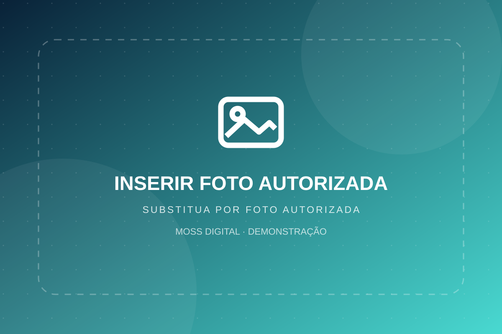

Experiência planejada
Roteiros e serviços sujeitos a condições e avaliação.
Uma vitrine refinada para passeios, embarcações e serviços náuticos com atendimento individualizado.

FOTO DE CAPA · assets/img/capa.webpRoteiros e serviços sujeitos a condições e avaliação.
Pedido personalizado com informações essenciais.
Galerias e explicações por tipo de solução.
Opções de referência para um futuro catálogo de serviços náuticos, com contratação sujeita à disponibilidade e condições.
Experiências com roteiro a combinar e orientação da operação habilitada.
Vitrine de modelos e características para consultas personalizadas.
Apresentação de revisão e conservação conforme avaliação técnica.
Apoio na escolha de soluções adequadas ao perfil do cliente.
Escolha o tipo de experiência ou serviço desejado.
Informe pessoas, data e local de interesse.
A operação confirma disponibilidade, segurança e condições.
Os espaços abaixo são reservas de fotos. Coloque seus arquivos autorizados e as imagens aparecem automaticamente.
Descreva sua ideia para receber retorno. Esta demonstração não reserva embarcações nem valida condições marítimas.
WhatsApp da demo: (11) 94203-8103
Este site é demonstrativo. O envio não cria cadastro, não cobra pagamento e não confirma serviços.
Não. O atendimento precisa confirmar embarcação, habilitação, meteorologia e disponibilidade.
Não. A demo encaminha pedidos pelo WhatsApp, sem checkout.
Sim, em versão futura com inventário de embarcações, datas, backend e checkout seguro.